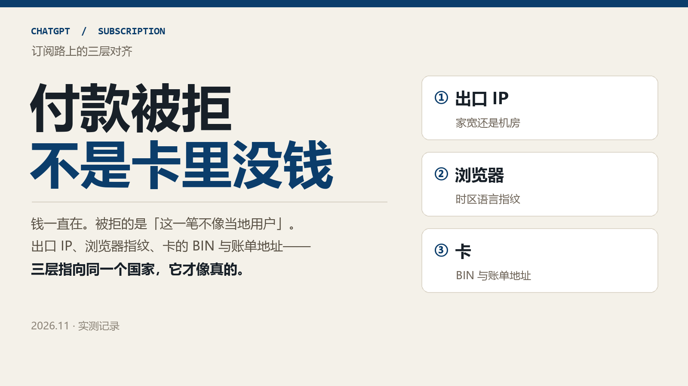
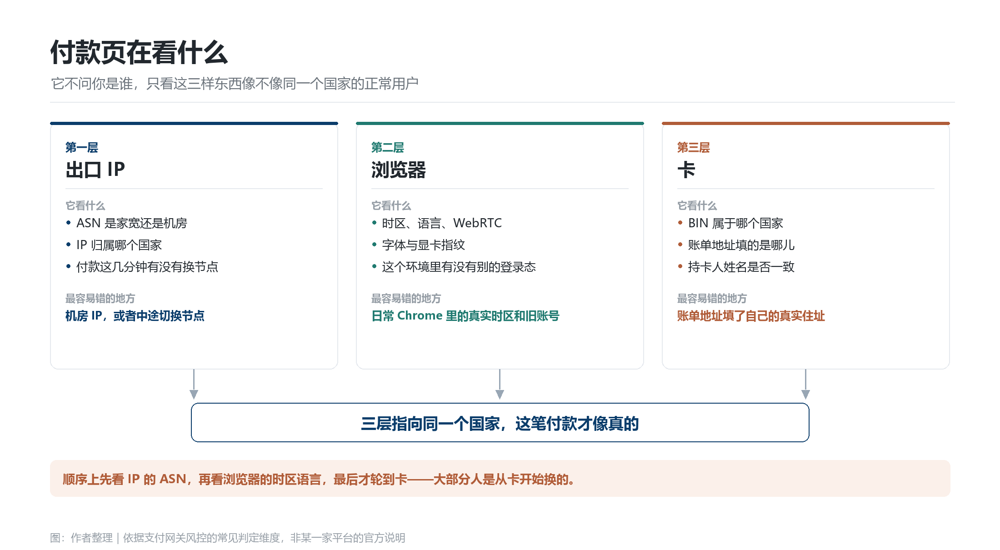
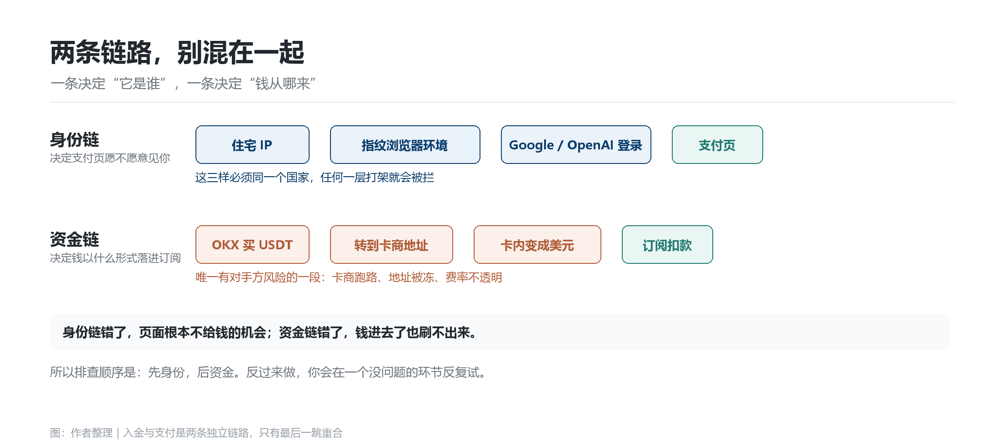

付款页上那句 Your card was declined，我见过三种反应：换一张卡、打电话问银行、再换一张卡。
钱其实一直在。被拒的是"这一笔看起来不像一个正常的当地用户"——而这跟余额、跟卡能不能用，是两件事。
支付网关不问你护照号，它算一个概率：这笔交易像不像这个国家的正常消费者。输入有三个：
三个都指向同一个国家，就是一笔普通的订阅。只要有一层和另外两层打架——机房 IP 配美国卡、美国 IP 配中国时区、美国 BIN 配一个中国住址——风控模型就会把它挑出来。

所以这套流程的本质不是"破解"，是别自相矛盾。矛盾是会被算出来的。
机房 IP 和住宅 IP 在风控里不是一个价位的东西。云厂商的 ASN 天然带着"这里是服务器"的标签，同一个号段上跑着爬虫、注册机、别人被封的账号。所以哪怕国家填对了，hosting ASN 也会先被降权。
住宅代理的逻辑就是把出口放在别人家的宽带上，ASN 属于当地运营商。我用的是 ROLA-IP 这类动态住宅池，选目标国家的节点。
两个细节比"买哪个套餐"更影响成败：
付款那几分钟必须是同一个 IP。 动态池会轮换，得挑支持粘性会话（sticky session）的用法，或者干脆按小时锁定一个出口。中途换 IP 等于自己举报自己。
从注册到付款，全程同一条出口。 谷歌账号在这里注册、OpenAI 在这里登录、卡在这里绑定——三件事发生在三个 IP 上，就等于告诉对方"这个人在移动"。
很多人以为指纹浏览器的用处是"多开"。在这个场景里，它的用处是把身份固定下来。
日常那个 Chrome 里有什么：你的真实时区、中文语言偏好、一堆登录态、WebRTC 会绕过代理直连暴露真实内网 IP、还有过去几年积累的历史。这些东西和刚买的美国 IP 摆在一起，矛盾得非常明显。
AdsPower 这类工具做的事很朴素：一个"环境"一套独立的 cookie、UA、时区、语言、Canvas/WebGL 指纹，再把环境的代理指向上面那个 IP。打开这个环境，就是一个"住在美国、用美国 IP 的浏览器"。

规矩只有一条：一个环境 = 一个身份 = 一个 IP = 一张卡，不混用。别在这个环境里登自己的主账号——那等于把两个身份焊在一起，之后哪个出事都会牵连另一个。
环境建好先自检一遍：浏览器里查 IP 归属、查时区、查 WebRTC 有没有漏真实地址。这一步花两分钟，能省掉后面两小时的怀疑人生。
U 卡是预付性质的虚拟卡，卡号是美国的 BIN，钱先充进去、再刷出来。我用的这家（roogoo 的邀请链接，带邀请码：你开卡免费，我会有一点返佣，介意的话去掉 inviteCode 直接访问）开卡流程是注册、实名、开卡、入金。
卡这一层最容易错的地方，不是 BIN，是账单地址。BIN 是卡商给的，改不了；账单地址是自己填的，很多人顺手填了真实住址——美国卡配中国地址，这一条就够拒了。填卡商给的那个美国地址，和卡一致。
第二容易错的是钱怎么进去。流程是：在 OKX 买 USDT，提到卡商给的收款地址，到账后在卡内换成美元余额。这一段和支付本身没有关系，是两条独立的链——但它是整条流程里唯一有对手方风险的一段，后面单独说。
费用要算清楚：开卡费、充值手续费、货币转换、汇率点差，叠起来通常在小几个百分点。二十美元的订阅，别只充二十。
1. 买 IP：目标国家、住宅、能锁会话
2. 建环境：绑代理，自检 IP / 时区 / WebRTC
3. 注册与登录：Google 账号、OpenAI，全程不换环境
4. 开卡入金：注册、开卡、USDT 入金、记下账单地址
5. 付款：填卡号 + 卡商地址 + 姓名，等结果
失败时按这个顺序查，别按直觉查：
大部分人从"换卡"开始查，因为卡是最容易换的东西。但顺序错了，换十张卡也没用。
这一节比前面五节都重要。
违反平台条款。 OpenAI 的服务地区限制写在条款里，用代理和异地卡订阅这件事本身就不合规。平台有权封号、有权不退款，而且它不需要给你理由。付了一年的钱，第 364 天被封，也是可能的。
卡商是单点风险。 虚拟卡服务商的资金池、合规资质、跑路概率，没有一样是你控制的。别把长期余额放在里面，用多少充多少。
入金的合规性是另一件事。 用加密货币给境外卡充值，在不同地区的法律定性不一样，税务和外汇也各有说法。这一段我不替你做判断。
成本不低。 住宅 IP 按流量或时长计费、开卡费、充值费、汇差，加起来比订阅标价高一截。它解决的是"能不能付出去"，不是"划不划算"。
还有一条更便宜的替代方案：找人代充。代价是把账号交出去，风险和上面完全不同——但对你可能更划算，这取决于你更怕封号还是更怕被盗。
这套流程跑通之后，你会有一个很具体的感受：为了一个本该三分钟完成的付款，你花了两小时，学到了三层风控的样子。
值不值，取决于你要的是"用上"，还是"用得久"。前者一次对齐就够，后者需要一条稳定不换的链路——同一个 IP、同一个环境、同一张卡，长期不动。
最贵的从来不是订阅费，是中间那些看起来省事、其实让你不知道自己卡在哪一步的操作。